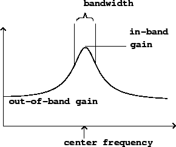

In some applications, such as equalization, the goal isn't to pass signals of certain frequencies while stopping others altogether, but to make controllable adjustments, boosting or attenuating a signal, over a frequency range, by a desired gain. Two filter types are useful for this. First, a shelving filter (Figure 8.5) is used for selectively boosting or reducing either the low or high end of the frequency range. Below a selectable crossover frequency, the filter tends toward a low-frequency gain, and above it it tends toward a different, high-frequency one. The crossover frequency, low-frequency gain, and high-frequency gain can all be adjusted independently.
Second, a peaking filter (Figure 8.6) is capable of boosting or attenuating signals within a range of frequencies. The center frequency and bandwidth (which together control the range of frequencies affected), and the in-band and out-of-band gains are separately adjustible.
|  |
Parametric equalizers often employ two shelving filters (one each to adjust the low and high ends of the spectrum) and two or three peaking filters to adjust bands in between.